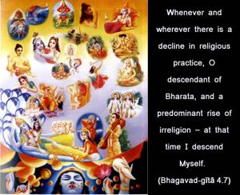
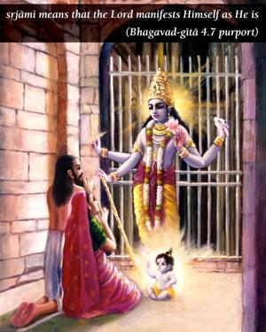

Whenever and wherever there is a decline in religious practice, O descendant of Bharata, and a predominant rise of irreligion – at that time I descend Myself.


The word sṛjāmi is significant herein. Sṛjāmi cannot be used in the sense of creation, because, according to the previous verse, there is no creation of the Lord’s form or body, since all of the forms are eternally existent. Therefore, sṛjāmi means that the Lord manifests Himself as He is. Although the Lord appears on schedule, namely at the end of the Dvāpara-yuga of the twenty-eighth millennium of the seventh Manu in one day of Brahmā, He has no obligation to adhere to such rules and regulations, because He is completely free to act in many ways at His will. He therefore appears by His own will whenever there is a predominance of irreligiosity and a disappearance of true religion. Principles of religion are laid down in the Vedas, and any discrepancy in the matter of properly executing the rules of the Vedas makes one irreligious. In the Bhāgavatam it is stated that such principles are the laws of the Lord. Only the Lord can manufacture a system of religion. The Vedas are also accepted as originally spoken by the Lord Himself to Brahmā, from within his heart. Therefore, the principles of dharma, or religion, are the direct orders of the Supreme Personality of Godhead (dharmaṁ tu sākṣād bhagavat-praṇītam). These principles are clearly indicated throughout the Bhagavad-gītā. The purpose of the Vedas is to establish such principles under the order of the Supreme Lord, and the Lord directly orders, at the end of the Gītā, that the highest principle of religion is to surrender unto Him only, and nothing more. The Vedic principles push one towards complete surrender unto Him; and whenever such principles are disturbed by the demoniac, the Lord appears. From the Bhāgavatam we understand that Lord Buddha is the incarnation of Kṛṣṇa who appeared when materialism was rampant and materialists were using the pretext of the authority of the Vedas. Although there are certain restrictive rules and regulations regarding animal sacrifice for particular purposes in the Vedas, people of demonic tendency still took to animal sacrifice without reference to the Vedic principles. Lord Buddha appeared in order to stop this nonsense and to establish the Vedic principles of nonviolence. Therefore each and every avatāra, or incarnation of the Lord, has a particular mission, and they are all described in the revealed scriptures. No one should be accepted as an avatāra unless he is referred to by scriptures. It is not a fact that the Lord appears only on Indian soil. He can manifest Himself anywhere and everywhere, and whenever He desires to appear. In each and every incarnation, He speaks as much about religion as can be understood by the particular people under their particular circumstances. But the mission is the same – to lead people to God consciousness and obedience to the principles of religion. Sometimes He descends personally, and sometimes He sends His bona fide representative in the form of His son, or servant, or Himself in some disguised form.
The principles of the Bhagavad-gītā were spoken to Arjuna, and, for that matter, to other highly elevated persons, because he was highly advanced compared to ordinary persons in other parts of the world. Two plus two equals four is a mathematical principle that is true in the beginner’s arithmetic class and in the advanced class as well. Still, there are higher and lower mathematics. In all incarnations of the Lord, therefore, the same principles are taught, but they appear to be higher and lower in varied circumstances. The higher principles of religion begin with the acceptance of the four orders and the four statuses of social life, as will be explained later. The whole purpose of the mission of incarnations is to arouse Kṛṣṇa consciousness everywhere. Such consciousness is manifest and nonmanifest only under different circumstances.